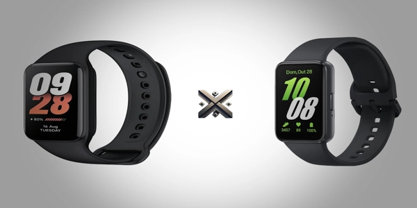

Com o avanço constante da tecnologia vestível, as smartbands tornaram-se itens indispensáveis para quem busca uma vida mais conectada e saudável. Entre os modelos mais populares atualmente, a Mi Band 8 Active e a Galaxy Fit 3 se destacam por oferecer bons recursos, visual moderno e preços competitivos.
Mas qual delas faz mais sentido para o seu perfil? Neste comparativo direto, vamos avaliar o que realmente importa: especificações, funcionalidades, presença de GPS ou NFC, duração da bateria e outros pontos que ajudam na decisão de compra.

A aparência é um dos primeiros fatores que influenciam na hora de escolher uma smartband. Nesse ponto, tanto a Mi Band 8 Active quanto a Galaxy Fit 3 têm seus próprios atrativos.
A Mi Band 8 Active aposta em um visual discreto e moderno. Acompanha uma pulseira feita em TPU, material conhecido por ser leve, confortável no pulso e durável o suficiente para o uso no dia a dia. Sua tela retangular de 1,47 polegadas oferece boa leitura mesmo sob luz intensa. Ela ainda vem com proteção contra riscos e suor, e sua versão global já é compatível com o português e recebe atualizações constantes.
Já a Galaxy Fit 3, da Samsung, entrega um visual mais sofisticado. Tem uma pegada mais premium. Seu corpo é feito em alumínio e a tela AMOLED de 1,6 polegadas entrega imagens com cores vivas e alta nitidez. Seu acabamento premium dá ao acessório uma pegada mais elegante.
As duas smartbands oferecem recursos úteis tanto para iniciantes quanto para usuários mais exigentes.
A Mi Band 8 Active pode durar até 14 dias com uso moderado e cerca de 7 a 10 dias com uso intenso. A Galaxy Fit 3 chega a 13 dias com uso leve e de 5 a 7 dias com uso mais pesado.
Nenhuma das duas smartbands possui GPS integrado. Ambas dependem do GPS do celular para mapear atividades externas como caminhadas e corridas.
Essas versões não trazem NFC. Essa função só aparece em modelos específicos vendidos na Ásia, com uso bastante limitado fora desses mercados.
É possível comprar tanto a Mi Band 8 Active quanto a Galaxy Fit 3 em sites de e-commerce e estabelecimentos especializados em tecnologia. Veja algumas dicas antes de comprar:
O preço da Mi Band 8 Active valor de R$ 257, enquanto a Galaxy Fit 3 costuma ser vendida por R$ 314, Pode variar conforme o local e o vendedor.
| Especificações | Mi Band 8 Active | Galaxy Fit 3 |
|---|---|---|
| Tela | 1,47" TFT LCD | 1,6" AMOLED |
| Tela com resolução | 172 x 320 pixels | 256 x 402 pixels |
| A bateria | 210 mAh oferece até 14 dias de uso | 208 mAh garante cerca de 13 dias de autonomia. |
| GPS | Não integrado | Não integrado (usa do celular) |
| NFC | Não | Não |
| Monitoramento cardíaco | Sim | Sim |
| Oxigênio no sangue (SpO2) | Sim | Sim |
| Modos esportivos | Mais de 50 | Mais de 100 |
| Controle de mídia | Sim | Sim |
| Versão Global | Sim | Sim |
| Valor | R$ 257 | R$ 314 |
Depende do que você procura. Ambas entregam bom desempenho com autonomia e funcionalidades úteis.
Para quem quer algo simples e eficiente com ótimo custo-benefício, a Mi Band 8 Active é a melhor escolha. Para quem busca mais funcionalidades, mais modos de treino e integração com o ecossistema Samsung, a Galaxy Fit 3 é a mais indicada.
Se tiver dúvidas ou já testou uma dessas smartbands, conte pra gente nos comentários!
Se você achou útil nossas dicas sobre qual é a melhor smartband entre a Mi Band 8 Active e a Galaxy Fit 3 ou ainda tem dúvidas, ficaremos felizes em ouvir sua opinião. Há algo que não entendeu ou gostaria de sugerir melhorias? Convidamos você a participar da nossa sessão de comentários no blog do Comparativos X.
 Diferenças entre iPhone 13 e iPhone 14: Tudo que você precisa saber
Diferenças entre iPhone 13 e iPhone 14: Tudo que você precisa saber Poco X6 ou Redmi Note 13 Pro plus? Qual Xiaomi vale mais a pena?
Poco X6 ou Redmi Note 13 Pro plus? Qual Xiaomi vale mais a pena? Galaxy A55 vs. A35: Qual o melhor smartphone da Samsung?
Galaxy A55 vs. A35: Qual o melhor smartphone da Samsung?